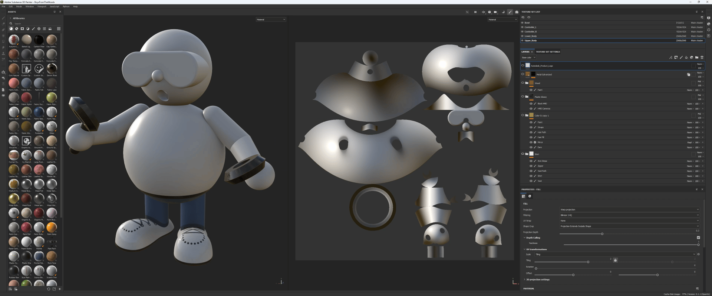

This year, I was given the task of creating a digital Christmas card that showcases our newly released Volume Rendering feature in VRED 2024.2.
After seeing all variations of cars with Christmas trees on the roof in recent years, I wanted something slightly different this year. Ideally, a consumer product created with Fusion360 that smokes or steams with a little German touch. While the southern part of Germany sets up nativity scenes during Christmas, the eastern part is known for its smoking mens (Räuchermänchen). These are small handcrafted wooden figures in which you place a small incense candle with scents like frankincense, pine, or cinnamon, and enjoy their sight. It seemed like a good idea to me. And if you put a VR headset on this cute little Räuchermänchenn, give him a controller in his hand, and add some decorations around, it quickly becomes festive and cozy for all tech enthusiasts.
Since these figures are mainly created on a lathe and therefore the body parts consist of simple rotational bodies, Fusion360 seemed to be the perfect tool for me to model and intersect the basic body. In fact, this was a simple task that took no more than 1 to 2 hours to complete.
To add some color to this small, yet somewhat plain figure made up of basic body parts, I used Substance 3D Painter. This is also a relatively easy-to-use tool for applying different materials to the various body parts and painting directly on the 3D model, similar to using a real brush. It allowed me to give the figure some personality and bring it to life.

Volume Scatter Material blah blah blah.
EmberGen from JangaFX

VDB Voulmes in VRED blah blah blah.

Creating a smoke simulation in Emg´berGen blah blah blah.
Brackets is an open-source project. Web developers from around the world are contributing to build a better code editor. Many more are building extensions that expand the capabilities of Brackets. Let us know what you think, share your ideas or contribute directly to the project.